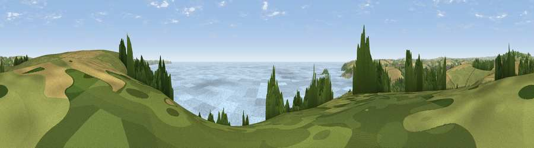

Viewpoint near Seaton
#1682 in England · top 3% of its area beats it · near Seaton · path 265 mWhere it is
The exact computed spot (SX 28338 54638). Click the marker for map links.
Public access: the nearest public right of way is about 265 m away — the final stretch may cross private land. Computed from Natural England's CRoW access layer and OpenStreetMap rights of way — not the legal definitive map. Always verify locally.
The view, rendered

A 360° render of this exact spot computed from the terrain model, tree cover and land cover — summer colours, afternoon light, calibrated against photographs of famous viewpoints. Real trees, hedges and buildings will differ in detail.
The panorama
Grey silhouette: terrain skyline in each direction (720 bearings, Earth curvature and refraction included). Dashed green: skyline with trees (+15 m) and buildings (+8 m) as obstacles. Blue strip: how far the ground is visible on each bearing.
Where the view opens
Wedge length = distance to the farthest visible ground on that bearing (vegetation-aware). Rings at 10, 25 and 50 km.
What fills the view
59% water · 20% grassland · 13% cropland · 7% woodland · 1% built-up
Angular shares of the visible panorama (visual magnitude), not map area. Landscape diversity 0.50 (0–1 Shannon).
Key numbers
More beautiful places nearby
The staircase of upgrades: each row has a higher view potential than everything closer. Driving times are estimates from straight-line distance, calibrated against real road routing — check an actual route before setting out.
| Place | Direction | Drive | Score |
|---|---|---|---|
| Viewpoint near Seaton | ENE · 1 km | ~2 min | 81.1 |
| Viewpoint near Downderry | E · 3 km | ~7 min | 81.5 |
| Viewpoint near Downderry | E · 5 km | ~12 min | 83.5 |
| Viewpoint near Polperro | WSW · 10 km | ~19 min | 83.7 |
| Pencarrow Head | WSW · 14 km | ~25 min | 86.0 |
| Viewpoint near Stenalees | W · 28 km | ~45 min | 88.0 |
| Viewpoint near Crackington Haven | NNW · 42 km | ~62 min | 88.1 |
| Viewpoint near Combe Martin | NNE · 98 km | ~123 min | 88.9 |
50.36654, -4.41509 · source: screening · position refined by local search. Computed location — check access rights before visiting.